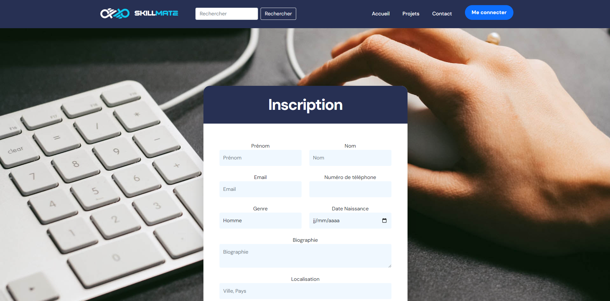
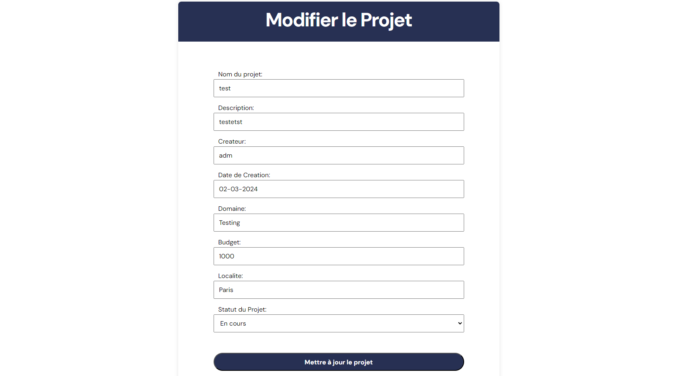

PPE - Développement - Php
SkillMate : Plateforme de Collaboration de Projets
Concept de l'application
Conception Structurée et Visuelle de SkillMate
Au sein de SkillMate, notre approche méthodique pour concrétiser notre vision a débuté par une phase cruciale de planification et de conceptualisation. Nous avons élaboré une présentation visuelle complète, utilisant des diapositives soigneusement conçues, pour expliquer en détail le concept de SkillMate. Cette présentation, partagée avec toutes les parties prenantes, que ce soit les clients ou les prestataires, a permis de clarifier notre vision et de s'assurer que chacun comprenne pleinement la portée du projet.
En parallèle, nous avons développé des éléments clés pour définir et structurer notre plateforme. Les wireframes ont fourni une représentation visuelle des interfaces utilisateur, établissant les fondations de l'expérience utilisateur. Les use cases ont été élaborés pour décrire les différentes interactions possibles sur la plateforme, garantissant une compréhension approfondie des scénarios d'utilisation. Le modèle conceptuel de données (MCD) a quant à lui servi à définir la structure des données sous-jacentes.
Enfin, un diagramme d'objets a été élaboré pour représenter les entités clés et leurs interactions au sein du système. Ces documents ont joué un rôle crucial dans la définition précise des fonctionnalités, des relations et des flux de données au sein de SkillMate, assurant ainsi une base solide pour le développement ultérieur. Ce processus de planification approfondi a été essentiel pour aligner toutes les parties prenantes sur notre vision commune et a jeté les bases d'un développement réussi et d'une expérience utilisateur exceptionnelle.
SkillMate, la plateforme innovante de collaboration pour créateurs de projets et talents !
SkillMate est le projet phare de cette année, une plateforme de collaboration révolutionnaire développée en étroite collaboration avec mon partenaire de projet, Sivan Cozzo. Conçue pour réunir les créateurs de projets et les talents, SkillMate offre une expérience complète, combinant un design attrayant avec des fonctionnalités avancées. Les technologies clés utilisées comprennent PHP, HTML, CSS, JavaScript et SQL, mettant en œuvre des concepts tels que le modèle MVC et les opérations CRUD pour garantir une robustesse et une modularité optimales.
Langages Utilisés
Le projet SkillMate est principalement développé en PHP, HTML, CSS, et JavaScript, exploitant également la puissance de SQL pour gérer efficacement la base de données. Le modèle MVC et les opérations CRUD ont été intégrés pour assurer une architecture robuste et modulaire.
Php
Langage principal pour la logique côté serveur, gérant les opérations backend cruciales pour SkillMate.
HTML & CSS
Utilisés pour structurer et styler le contenu de la plateforme, garantissant un design intuitif et esthétique.
JavaScript
Apporte une interactivité dynamique à l'interface utilisateur, notamment pour les fonctionnalités avancées et les animations du logo.
SQL
Utilisé pour la gestion de la base de données, stockant efficacement les informations des utilisateurs, des projets et des tâches.
Inscription & Connection
Sécurité renforcée
La fonction d'inscription et de connexion de SkillMate met l'accent sur la sécurité des utilisateurs. Le système de hachage des mots de passe garantit que les informations sensibles restent confidentielles. En utilisant des algorithmes de hachage robustes, comme bcrypt, nous assurons une protection maximale des données utilisateur, même en cas d'accès non autorisé.

Profil Utilisateurs et Projets
Personnalisation Complète
SkillMate offre une personnalisation exhaustive des profils utilisateurs. Les utilisateurs peuvent ajouter des détails sur leurs compétences, expériences professionnelles et intérêts. Ceci est réalisé à travers un formulaire convivial qui guide l'utilisateur dans la création d'un profil complet et informatif.
Projets Innovants
La création, modification et participation à des projets sont des éléments fondamentaux de SkillMate. La fonction de création de projet est intuitive, guidant les utilisateurs à travers un processus structuré où ils peuvent décrire leur vision, les compétences requises, et les objectifs du projet. La modification de projets existants est également fluide, permettant aux créateurs de rester agiles dans leurs besoins.
Hiérarchie d'Utilisateurs
Rôles Définis
SkillMate introduit une hiérarchie d'utilisateurs pour assurer une gestion efficace des projets. Les créateurs ont le rôle principal, avec des membres qui peuvent participer activement. Les chefs d'équipe bénéficient de privilèges supplémentaires, notamment la création et l'assignation de tâches.
Gestion de Tâches
Les chefs d'équipe jouent un rôle crucial dans la gestion des tâches. Ils peuvent créer des tâches, les assigner à des membres spécifiques, et suivre la progression de chaque tâche. Cela apporte une structure à la collaboration, permettant à chaque membre de savoir clairement ce qui est attendu.
Système de Tâches Collaboratif
Création de Tâches
Les utilisateurs de SkillMate peuvent créer des tâches détaillées, indiquant les exigences, les échéances et les compétences nécessaires. Les tâches peuvent être attribuées à des membres spécifiques, facilitant une répartition efficace du travail au sein de l'équipe.
Flexibilité de Modification
La capacité de modifier les projets et les tâches à tout moment est une fonctionnalité cruciale. Les besoins d'un projet évoluent, et SkillMate offre la flexibilité nécessaire pour s'adapter aux changements tout en maintenant une collaboration transparente.
Fonctionnalités Avancées avec CRUD
Dynamisme avec CRUD
Le système CRUD est au cœur de SkillMate, facilitant la création, la lecture, la mise à jour et la suppression des données. Les opérations CRUD permettent aux utilisateurs d'interagir de manière dynamique avec les projets, les tâches et les profils, assurant une expérience utilisateur fluide.

Likes et Barre de Recherche
Interactions Utilisateur
Les likes sont une fonctionnalité sociale importante, permettant aux utilisateurs d'exprimer leur appréciation pour un projet particulier. Ceci encourage l'engagement communautaire et permet aux projets populaires de se démarquer.
Recherche Intuitive
La barre de recherche, filtrant les projets par caractères, offre une solution intuitive pour découvrir des projets pertinents. Cela améliore l'expérience de recherche, permettant aux utilisateurs de trouver rapidement des opportunités correspondant à leurs compétences et intérêts.
Logo Animé et Design Attrayant
Identité Visuelle Mémorable
Le logo animé de SkillMate n'est pas simplement un élément visuel, mais une extension de l'identité de la plateforme. L'animation fluide ajoute une dimension unique, captivant les utilisateurs et renforçant la mémorabilité de SkillMate.
Esthétique Soignée
Chaque aspect du design a été soigneusement pensé pour offrir une esthétique agréable. Les couleurs, les polices et les mises en page ont été sélectionnées pour créer une expérience utilisateur harmonieuse et professionnelle.
SQL au Cœur de la Base de Données
Gestion Efficace des Données
L'utilisation judicieuse de SQL dans SkillMate garantit une gestion efficace des données. Les requêtes SQL sont optimisées pour assurer des opérations rapides et un accès fluide aux informations, garantissant une expérience utilisateur réactive.
SkillMate est bien plus qu'une plateforme de collaboration , c'est une manifestation de ma passion pour la création de solutions significatives. Chaque fonctionnalité est conçue avec soin pour offrir une expérience utilisateur
SkillMate, une équipe soudée
SkillMate incarne la puissance de la collaboration, résultat d'une synergie exceptionnelle entre créativité et compétence. Fruit d'une collaboration inspirante avec Sivan Cozzo, ce projet fusionne nos idées pour offrir une plateforme où les esprits créatifs se rencontrent, façonnent des projets novateurs, et tracent l'avenir de la collaboration numérique. SkillMate, le fruit d'un partenariat qui repousse les frontières de l'innovation.
Application de Communication et Gestion de Projet
Au cœur de notre méthodologie collaborative se trouvent des outils puissants qui ont transformé notre manière de travailler ensemble.
Discord, avec son chat vocal et ses fonctionnalités de messagerie instantanée, a été le canal central de communication, facilitant des échanges dynamiques et rapides.
Trello, quant à lui, s'est révélé indispensable pour la gestion de projet.
Ses tableaux intuitifs, listes et cartes ont structuré nos tâches, permettant une visualisation claire de notre progression.
L'intégration de GitHub et Gitbash a élevé notre gestion de version à un niveau supérieur, facilitant le suivi des modifications, la collaboration sur le code et le maintien d'une cohérence entre les membres de l'équipe.
Ensemble, ces applications ont créé un écosystème collaboratif robuste, accélérant notre processus de développement et favorisant une synchronisation harmonieuse dans la réalisation de nos projets.
Conclusion
SkillMate représente le sommet de mon année, un projet où la collaboration, l'innovation et la maîtrise des technologies web convergent. Cette plateforme va au-delà de l'outil de collaboration, incarnant ma passion pour la création de solutions significatives. SkillMate est l'expression de mon engagement envers l'excellence technique et l'expérience utilisateur, soulignant ma capacité à concevoir des solutions complexes tout en offrant une expérience intuitive et significative.